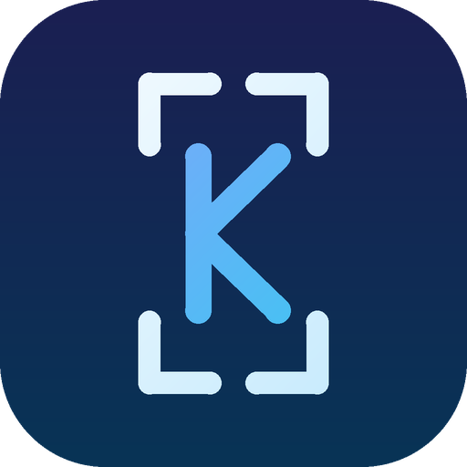

Captions with timing
Speech recognition with a timestamp for every word. Local Whisper models, or Groq in the cloud with your own key. English, Russian and many other languages.

KadrKadr makes captions with word-level timing, finds the best moments, removes dead air and exports vertical video. Speech recognition runs locally.
Speech recognition with a timestamp for every word. Local Whisper models, or Groq in the cloud with your own key. English, Russian and many other languages.
Words the recognizer was unsure about are highlighted. A glossary fixes names and terms. Paste the correct script and the captions keep their timing.
Finds self-contained 25–60 second highlights in English, Russian and romanized Urdu/Hindi. Trim, rename, add or delete them by hand.
Over 100 subtitle styles. Fonts, outline, shadow, boxes and the emoji above the text are rendered into the video exactly as you see them.
Timeline with every word editable, razor, removal of silence, B-roll from Pexels (your key), undo and redo.
Save the whole session to a .kadr file and continue later. Import a video you have the right to use straight from a YouTube link.
Python, FFmpeg and the speech engine are bundled. Nothing else to install.
No. Recognition and rendering happen on your computer. The only exception is the optional Groq engine, which receives the audio when you add your own Groq key. There is no analytics server in the app.
No. A graphics card makes recognition and export faster, but everything also works on the processor. The larger offline models download once on first use (about 1.5 GB for Turbo).
The import tab downloads a link into the editor. Use it only for videos you own or have permission to use; the rules of YouTube apply.
The app checks this repository's releases (Settings → Updates) and downloads the new installer when there is one.
The code is MIT licensed. Kadr started from the open-source CapShorts by Ali Raza; the original notice is kept in the repository.